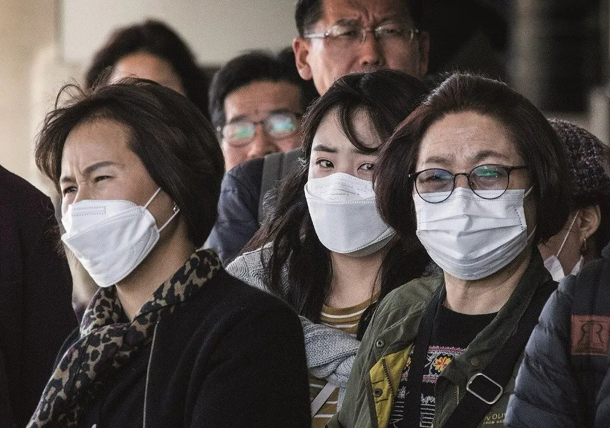

新冠疫情蔓延六大洲，世卫密切监测新进展
原文链接 备份链接 目前包括中国大陆在内，全球已经有41个国家和地区出现了疫情，其中，韩国是中国大陆之外疫情蔓延最快的国家。 尽管如此，世卫组织不希望在“没有谨慎和清晰地分析事实情况之前”仓促宣布疫情为全球“大流行病” 文 |《财经》特派 …

在美国过去200多年抗击传染病的经验中，最重要的一条也许是：学会利用“坏消息”去纠正问题，并把它变成习惯和制度
***********金焱 | 文***********
*************************马克 | 编辑*************************

2020年1月29日，一趟抵达美国加州的航班，许多乘客戴起了口罩。图/法新
2月7日，伴着武汉医生李文亮凌晨离世的消息，豪华邮轮“钻石公主”号再新增41例确诊新型冠状病毒肺炎病例，很快被外界称为“瘟疫邮轮”、“漂泊中的鬼魂船”。
乘坐这艘邮轮度蜜月的托雷斯夫妇（Rachel Torres、Tyler Torres）本应该在这一天回到美国得克萨斯州达拉斯地区的欧文（Irving）市，但却被困船舱，打发着无聊、混乱而焦虑的隔离时光。后来托雷斯夫人自嘲说：“我花了两年半时间在研究生院学习如何帮染病者或残疾人在生活中找到有意义的职业，获得执照后才发现，我第一批真正意义上的患者是我自己和我丈夫。”
或蜜月被隔离，或度假进医院，直至生离死别，家破人亡……一场国际公共健康危机定义了2020年初的世界。
世界卫生组织总干事谭德塞通报说，截至日内瓦时间2月28日上午6时，中国向世卫组织报告了78959例新型冠状肺炎病例，2791例死亡。在中国以外，49个国家出现了4351例病例，67例死亡。他宣布，当日起将新冠肺炎疫情全球风险级别由“高”上调为“非常高”。
托雷斯夫妇所在的美国，截至2月底已有60人确诊新冠肺炎。美国华盛顿州西雅图地区3月1日报告一例新冠肺炎死亡病例，这是该州同时也是美国第二例死亡病例。
病毒让人们重新审视各国的行政与医疗系统的反应能力，慢一分钟就意味着更多的人感染，更多的死亡病例，以及更大的社会代价。曾在非典期间主持美方相关人士与中国疾病预防控制中心跨洋电话会议的得州大学达拉斯分校前副校长冯达旋对《财经》记者说，病毒是最民主的，它对所有人都一视同仁。
意大利前环境部长科拉多·克利尼（Corrado Clini）对《财经》记者指出，非典疫情时，本应产生一个全球性、永久性的，在世卫组织支持下的攻克病毒的研究计划，但是没有；同样没有一个有效的全球传染病监测和控制系统，新冠肺炎疫情因此让所有人措手不及。也许，新型冠状病毒戏剧性的发展会扭转“去全球化”和经济脱钩的趋势。
美国得克萨斯州医院协会（Texas Hospital Association）首席医疗官与得克萨斯大学西南医学中心临床教授、Parkland医院前副院长与首席质量官罗伯特·亨德勒（Robert Hendler）对《财经》记者表示，“改变很难，但永远不要浪费一次好的危机。若环境允许，我们应当快速吸取经验教训，而不是压制正确行动。”
当医疗遇到政治
疫情中有各种不确定性。应对疫情危机不仅需要牢固的医疗体系、精妙的医学网络，更需要慎重的政治判断、运筹帷幄。医疗和政治如何互动，充满了琐碎与障碍，但最终展现出来的却是一幕幕惊心动魄的剧情。
托雷斯夫妇登上“钻石公主”号邮轮、加入来自50多个国家及地区大约3700名的乘客及船员之中，最后和邮轮一道在横滨港成为漂浮的流行病灾难的展示平台。
日本政府最初决定将疫情完全控制在境外，结果无论是对“钻石公主”号邮轮的海上隔离，还是对可能的接触者逐一检测，事后都变得没多大意义，只是让医疗体系不堪重负——事后证明，日本政府的拖延，加上在长达两周隔离期间采取的草率和无效的遏制措施，从战术到策略上都非常被动。
“钻石公主”号邮轮疫情的日益恶化，催生了美国国内一系列政治博弈，终于促使美国政府做出撤侨决定。
托雷斯夫妇随同另外326名美国人选择了登上747货机撤离。在雨夜他们下了邮轮，登上巴士，在港口巴士停了两个多小时才启动，到达羽田机场后又开始了漫长的等待。
托雷斯夫妇是美国传染病疫情应对体系的终端，这个体系的顶端包括白宫、联邦机构、国会和部分军方的网络。1月29日白宫应对新型冠状病毒工作组成立，工作组由美国卫生与公众服务部（HHS）部长亚历克斯·阿扎领衔，并通过国家安全委员会协调。成员包括美国总统国家安全事务助理奥布莱恩、美国疾病控制和预防中心（CDC）主任雷德菲尔德、美国国家过敏症和传染病研究所主任福西、副国务卿比根等12名来自卫生、外交、国土安全、交通等部门的高级别官员、白宫幕僚和医学专家。
这还不够，特朗普在1月29日主持会议时，责成工作组领导美国政府机构应对新型冠状病毒疫情，并随时向他通报情况。在不到一个月的时间内，特朗普政府采取了大量措施来应对病毒疫情，包括宣布进入公共卫生紧急状态，实施旅行限制和强制隔离。
尽管如此，特朗普政府面临的压力仍越来越大。CDC副主任舒卡特（Anne Schuchat）2月25日称，美国希望建立大规模的应对措施，以防在美国发生社区传播。两天后，特朗普任命副总统彭斯领导美国新冠肺炎疫情防控工作，负责协调医务人员和其他专业人员，防止病毒在美国蔓延。
白宫花了相当长时间考虑是否应该任命这样一位大总管——有这样一个中心人物有利于更好地协调各个环节的运作。彭斯成为抗击疫情的大总管，因为他在担任印第安纳州州长期间有医疗政策方面的经验。
这架庞大的机器各个零件都在运转，在并行工作外也在协调互动。系统中有合作，也总是充满了冲突和摩擦。
在托雷斯夫妇下邮轮时，横滨下起了雨，同时从天而降的是日本的检测结果通知：328个返美乘客中有14人在病毒检测中呈阳性。于是所有的计划被打乱——原计划只有经过筛查、没表现出任何疾病症状的乘客可以飞回美国。如何处置这14个人？球被踢回美国首都华盛顿。
此时的华盛顿仍然在享受周日的下午时光。14个人的消息从地球另一边传来，坐镇指挥的政府官员吵成一团。根据媒体报道，美国国务院和特朗普政府的一名高级卫生官员坚持按照计划行事，与中国卫健委职能有相似之处的HHS助理部长、新冠病毒特别工作组成员罗伯特·卡德莱克（Robert Kadlec）称，“工作人员已经准备好应对可能在长途飞行中出现症状的乘客。两架波音747各有18个隔离位置，传染病医生也会随行。”
回顾此事，美国国务院新闻发言人对《财经》记者表示，国务院没有比海外美国公民的福祉和安全更高的优先级。国务院遵循HHS对“钻石公主”号邮轮乘客及船组人员的“感染新冠病毒风险高”的评估（行事）。
美国CDC官员则担心在飞机上发生感染而不同意这14人随机，CDC首席副主任安妮·舒哈特（Anne Schuchat）专门致电美国国务院表达反对和担忧。不同于中国CDC隶属于卫健委，当年提出“以光速传播的互联网对抗以近音速传播的非典”口号的冯达旋对《财经》记者说，美国CDC可以直接跟总统通消息，有权力在疫情中立刻采取行动，国家要根据它的指挥方式来运作。
但在14个人的安排上，最后美国国务院一方胜出，14名乘客同一架飞机飞回，用CBCS集装箱生物控制系统隔离。美国CDC转而要求与相关的新闻发布会及其内容撇清关系，删除新闻稿里和CDC有关的内容。
这样的小插曲贯穿于此次突发公共卫生事件中，它带来的挑战是，因无先例可循，与病毒的博弈稍有不慎就满盘皆输。亨德勒对《财经》记者说，美国的医院和医务人员通过与病魔斗争已建立起牢不可摧的安全文化，成为阻挡恶性事件的堡垒。在理想的情况下，政府机构和部门的运作应该是相似的，但在现实中并非总是如此。
托雷斯夫妇回到美国后发现，政府应对新冠病毒危机，已成为一个政治问题，随着疫情日趋严重，国会民主党人并不认可特朗普政府处理疫情的措施，认为特朗普政府的反应“迟缓、疲软”。
美国CDC的底气
2020年2月以来，新冠肺炎疫情向全球蔓延的速度不断地加快，六大洲均未能幸免。
2月26日拉丁美洲沦陷，同日美国CDC怀疑加州一名患者病毒检测呈阳性，但其未接触过任何感染病毒的人，也没有去过暴发疫情的国家。CDC直言，这意味着美国可能出现首起社区传播病例。
美国CDC发声，在国际上很有分量。全球顶级风险咨询公司、香港政治与经济风险咨询公司（PERC）分别在2003年、2012年两次统计世界各国应对重大疾病和传染疾病能力的报告显示，在处理突发公共卫生医疗事件上，美国能力两次均居世界首位。
2009年3月30日，加州一个儿童出现流感症状，一周后康复。接诊医疗机构发现无法判断病毒类型后，立即上报加州公共卫生部门，并于4月13日通知美国CDC，14日送达病毒样本，CDC当日确定是新流感病毒。加州另一病童3月28日就诊，4月17日CDC收到样本后立即检测并告知加州各公共部门。随后，CDC追踪两个案例的感染源，均未发现家畜接触史，怀疑这种病毒已经在人与人之间传播。
2020年2月4日，美国加州一家超市内的N95口罩已经售罄。图/法新
这个可怕的病毒就是传染性极强的H1N1“猪流感”。2009年猪流感死亡率相对较低，估计为0.02％，但其大规模流行造成约28.5万人死亡。
意识到问题的严重性，2009年4月18日，美国CDC上报世界卫生组织；4月21日，在接到第二个病例的第四天，CDC召开新闻发布会将疫情通知公众，并启动疫苗研发，同时要求加州上报所有不能分型的流感病毒；4月22日，CDC启动针对H1N1疫情的紧急行动中心；4月23日，CDC收到得克萨斯州提交的另外两例H1N1病例。同日，CDC完成墨西哥送来的病毒基因序列测序，确定是H1N1病毒。
对于非专业人士来说，这个时间轴会比较单向。更直观地解读美国CDC的决策系统的效率，可将上面的数据与此次有确诊病例的、应对疫情效率居中的国家相比：从首例应诊到上报CDC，新冠肺炎用时3周，H1N1用时2周；国家卫生部门接到病例到启动紧急事件响应，新冠肺炎用时23天，H1N1用时9天；启动疫情防控时的病例数，新冠肺炎291例，H1N1则仅4例。虽然用2020年的数据对比2009年的数据，但美国CDC十多年前的效率还是更快一档。
因初级保健内科的开创性工作而闻名于世的哈佛医学院和麻省总院的全科医学终身教授阿伦·高路（Allen Goroll）对《财经》记者说，（新冠疫情）的经验教训我们基本上都知道，就是疫情的早期报告和全面公共卫生应对的重要性。
在H1N1之前更早，各种疫情，早至1793年美国费城暴发的传染病黄热病，近到2012年的中东呼吸综合征MERS、埃博拉疫情……历史教训推动美国不断调整和重塑决策体系与反应系统。达美国际健康服务集团首席执行官邵新立对《财经》记者指出，美国的传染病报告系统主要依赖于各州卫生部门的自行监督与管理，CDC总负责，州一级卫生部门和CDC无隶属关系，决策比较公开透明，发现问题及时上报CDC，更会得到联邦政府在疫情防控方面的资源和支持。政府部门和疫情防控各司其责，多元化领导，没有利益冲突，也不会隐瞒疫情。
一个基于网络的平台在2009年启动，它隶属于美国CDC，美国各级卫生部门可在该平台中输入疾病暴发的信息。在邵新立看来，全美如今已拥有一个较为完善的疾病情报系统，即国家疫情报告系统（The National Outbreak Reporting System，NORS）。它支持州、地方和地区公共卫生机构的合作伙伴进行疫情报告。CDC通过NORS收集来自细菌、病毒、寄生虫、化学品、毒素和未知病原体引起的肠道疾病暴发报告，以及非肠道疾病的食源性和水源性暴发事件。NORS的出现使情报监测与汇报系统更加完善，并避免了报告机制中出现的人为影响因素。
美国在进行暴发性疾病调查时，通常是由州、地区和地方的公共卫生机构以及疾病预防控制中心来发起，这些机构通过NORS报告的疫情，收集的信息如发生的日期和位置，生病的人数及其症状以及引起疫情的病原体等信息来做出反应。
2月底，美国CDC的调子变得更为严峻，表示新冠肺炎疫情随时会在美国出现大规模暴发。围绕重大及新型或病因未知的流行病，美CDC的报告政策非常严格。呼吸道疾病传染性强，但病原体很难确认的，有专门的“不明原因的呼吸道疾病疫情”（URDO）工作组。
不明病因疫情、需住院或造成死亡的严重疾病、可能需要疫苗预防的疾病、对流行病学或感染控制等有用的疫情、某机构（如医院和学校）内发生的疫情、生物恐怖主义相关疫情、易感人群间的疫情、导致公众恐慌的疫情、规模大或正在快速散播的疫情等等，这些都被美CDC列入须深入调查或启动紧急应对机制的呼吸道疾病中。
疑似肺炭疽、鼠疫、SARS、中东呼吸综合征和汉坦病毒肺综合征等需要立刻进行公共卫生干预的呼吸道疾病，卫生官员发现一例即可评估其是否应定义为潜在疫情。美国疾控中心规定，发现这类情况后，相关人员应立即通知市县或州一级的卫生官员，并通过URDO专用电邮或专用的紧急电话通知美国疾控中心。
对待疫情，需要将公共卫生信息转化为及时有效的决策。中国国家卫健委高级别专家组组长钟南山提出，2019年12月下旬在中国疾控中心（CDC）已经确认新型冠状病毒出现“人传人”，当时没有发布，是因为CDC只能向上报，再由地方政府决定。
冯达旋认为，疫情发生，若能由下而上迅速披露出来，控制起来就比较容易，如果都等上面点头，就慢了。
悲剧止于第一道防线
当年费城黄热病之战中有一个传奇人物本杰明·拉什（Benjamin Rush），他是哲学家、作家、政治家和敬业的社会改革者，但他更是18 世纪美国最著名的内科医生。他选择留在了城里，成为费城黄热病之战的领袖。
拉什医生的传奇叙述的经典道理是，在流行性疾病暴发时，无数初级保健系统与人员组成的基层医疗是重要的第一道防线，无论2009年的H1N1流感、2014年的埃博拉病毒还是2016年的寨卡病毒事件，邵新立总结说，在流行性疾病暴发时，基层保健体系的完善与否与全科医生的作用是决定疫情走向的关键因素。
在武汉疫情暴发时，面对的一个难题是医院发热门诊接诊压力大，病患居家隔离风险较高。同样，埃博拉病毒从几内亚的一个小村庄传播到西非其他国家时，只有无国界医生组织（MSF）在社区进行监视，提高意识和保护患者，但他们不堪重负，难以为继。在简报中他们提到，“实际行动缓慢、零散且危险地达不到预期，迫切需要其他人的配合才能控制这种疾病。”MSF提出的解决办法是，让社区(家庭)医生扮演更加积极的角色来减轻疾病的扩散——家庭医生从整体看待疾病，可以促进非洲等初级卫生保健系统和条件的改善，帮助决策者和其他专业人士了解社区。
武汉疫情阻击战正式打响时，社区是这场战争防控端的最末梢。新华社报道说，社区遇到的难题是市民称其不作为、逃避责任。也出现患者确诊新冠肺炎后，不服从集中隔离、入院治疗等措施的事件。邵新立指出，社区与政府医疗保健系统之间若缺乏信任，会加剧流行病的传播，部分原因是人们可能未很好遵循公共卫生当局的建议，使得感染或传播感染的风险增加。
在西非埃博拉疫情期间，由于交通不畅、天气恶劣、对援助人员的不信任，以及政府或国际卫生官员对流行病的恐惧，使得在偏僻的社区中经常出现暴发性事件，也成为疫情难以扑灭的重要原因。
但即使在像西非这样缺乏基本医疗服务的环境中，也有办法弥合差距——通过当地社区卫生工作者与基层保健体系的帮助来实现，利用其共同的生活背景、文化和地区亲近优势，克服地理和信任的障碍来跟踪感染的患者并确定可疑的接触病例。社区卫生工作者提高了社区与政府之间的信任。这样的专业人员与初级保健网的存在与设立，大大增强了暴发流行病控制的能力，此外他们的工作也减轻了医院门诊人数的压力，使疫情防控能得以有效开展。
冯达旋的女儿是美国西南医学中心小儿急诊专科医生，受到的训练非常严格，除了医学诊断方面的训练，还包括大数据的训练、科技方面的训练等等。冯达旋说，现在跟2003年非典不同的地方，大数据、人工智能在发挥重要的作用，中国一方面急诊科医生不够，一方面这种全方位的培训也不足。
在美国，医生的第一道防线作用还体现在医师检测到具有重大公共卫生影响的特定疾病时，他们通报给当地相关公共卫生部门的门槛很低。这些州的公共卫生部门遍布各地，最后由CDC在最高级别上协调信息。更重要的是，公共卫生领域的各部门间彼此“互联互通”，让传染病报告系统可操作性极强。
在医院体系中，报告通常由传染病专家处理，他们被告知有特定的呈阳性结果传染病案例，而报告是由微生物实验室或类似专家出具的。报告传染病被视为职业责任。反过来，执业医师能及时了解社区中各种上报疾病的流行情况。这些情况更新通常会附有临床信息，让他们能更有效地早期检测到问题。
找到“弱信号”
尽管美国已为应对新型冠状病毒做了相当充分的准备，但美国资深卫生安全专家警告说，终将会有各种漏洞暴露出来。一个问题是，目前美国许多医院多余的床位都不多，且还有可能受到供应链的限制。目前医院也缺乏对这种病毒的诊断能力。
管理学者维克（Karl Weick）的研究已成为组织管理中的经典，他指出，山火难灭，因为一切事先的准备都可能无效。山火无情，它往往吞噬蔓延经过的一切。维克提出的“弱信号”理论被罗伯特·亨德勒作为医院管理的指导原则之一，用于培训医务人员寻找那些重要事件或代表趋势的、最初的不精确和低可见性的指标，这些所谓的“弱信号”包括感染控制问题、可能的潜在医疗错误、人员不当行为等，以便在“弱信号”变成大问题之前及时评估。
例如输液泵问题就是一个“弱信号”的例子。在医院工作的人都知道如果输液泵不准确会给病人带来很大的风险。享德勒说，有一位护士注意到患者因潜在疾病在夜间病情恶化并转入了ICU，她怀疑前一天晚上的输液泵可能有问题，尽管无法确定，她还是报告了这个“弱信号”。由于护士对“弱信号”的报告，该输液泵被检查，随后发现这一批输液泵和其他使用中的输液泵在有关药物的剂量方面存在信息矛盾，导致多名病人药物过量。于是医院立即对所有输液泵进行仔细检查，并每季度审核汇报。
护士及时发现“弱信号”并报告的理想情况在美国医疗体系中不多见，实际上人们并不愿意报告。罗伯特·亨德勒说，这涉及到不同国家不同组织的安全文化和报告文化。无论是医院还是政府部门，很多地方不习惯利用“坏消息”去纠正问题，而是简单地不作为：要么把坏消息最小化，要么压制坏消息。他们要么担心上面归罪到自己的头上，要么担心媒体的负面报道，或者担心股价损失。
在Parkland医院，亨德勒担任过首席质量和安全官——当时医院正处于重大质量和安全转型期间，差点被政府关闭。亨德勒为提高医院的安全文化，提出如果医务人员报告的顾虑没有得到解决，就要进行“识别、通知和升级”：在发现弱信号后，重要的是要确保有采取行动的系统，鼓励领导者根据发现的情况制定行动计划。除了复杂且需要更深入的调查评估外， Parkland医院的安全报告回复要求在7天之内完成。如果发现问题没有报告，会被视为违反雇佣条例，根据医疗问题的严重程度，有可能会被解雇。
这一系列的报告文化建设，让亨德勒用了三年的时间帮助困境中的医院重新回到了美国安全性最高的10％的医院之列。 在邵新立的介绍中，美国的公立医院一个月收到的医务人员的报告可能多达上千条，相比中国一年可能只有几百条。Parkland医院在亨德勒离开前，每月有1800份安全报告。
宾夕法尼亚大学佩雷尔曼医学院的Schaeffer医学教授和高级医学实践助理院长杰克·恩迪（Jack Ende）指出，报告体系并非不存在利益冲突。如果医院报告有特定的高感染率，它可能会引来重大的干预措施，甚至可能关闭医院。但是最终证明，美国医疗专业人士往往会为患者安全做正确的事，而不是为维护某个特定机构的声誉去做事。
所以，恩迪说，如果出现医疗错误，那是系统出了错，而不是某个特定专业的人员的错。
“美国的医院在努力建立一种在真正意义上的‘错误最少’的安全文化。”罗伯特·亨德勒对《财经》记者说。
作者为《财经》特派记者，文章原载2020年3月2日《财经》杂志


责编 | 蒋丽 lijiang@caijing.com.cn

原文链接 备份链接 目前包括中国大陆在内，全球已经有41个国家和地区出现了疫情，其中，韩国是中国大陆之外疫情蔓延最快的国家。 尽管如此，世卫组织不希望在“没有谨慎和清晰地分析事实情况之前”仓促宣布疫情为全球“大流行病” 文 |《财经》特派 …
原文链接 备份链接 由于缺乏疫苗等应对措施和其他未知因素的存在，专家们仍认为疫情对美国构成风险 *文 | 《巴伦》撰稿人列什玛·卡帕迪亚* *编辑 | 郭力群* 虽然投资者对于新冠病毒疫情造成的后果的担忧正在减弱，但一些顶尖医学专家警告 …
原文链接 备份链接 新冠疫情是一场全球灾难，也是各国公共卫生的练兵场。 按照世界卫生组织专家、伦敦卫生和热带医学院流行病专家戴维 · 海曼（David Heymann）教授的观点，阻止新冠病毒传播的更重要的因素是一个国家医疗保健体系的实 …
原文链接 备份链接 【财新网】（记者 丁捷 综合）疫情肆虐两月有余，随着病死率下降，全国累计治愈出院病例超过4万，中国疫情得以缓解。但病毒触角已伸及南极洲外地球上的所有大洲，其他国家风险上升，目前中国确诊境外输入性病例五例，其中宁夏两例、 …
原文链接 备份链接 澎湃新闻记者 陈绪厚 不幸的消息再次传来。武汉市中心医院3月1日上午发布公告：武汉市中心医院甲状腺乳腺外科党支部书记、主任、主任医师、中国医师奖获得者江学庆同志， 在抗击新冠肺炎疫情工作中不幸染病，经全力抢救无效，于3 …